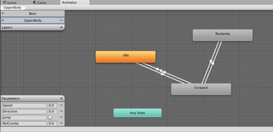

Unity Manual>User Guide>Creating Gameplay>Mecanim Animation System>Bringing Characters to Life>Animator Component and Animator Controller
Animator Component and Animator Controller
Animator Component
Any GameObject that has an avatar will also have an Animator component, which is the link between the character and its behavior.

The Animator component references an Animator Controller which is used for setting up behavior on the character. This includes setup for State Machines, Blend Trees, and events to be controlled from script.
Properties
| Controller | The animator controller attached to this character |
| Avatar | The Avatar for this character. |
| Apply Root Motion | Should we control the character's position from the animation itself or from script. |
| Animate Physics | Should the animation interact with physics? |
| Culling Mode | Culling mode for animations |
| Always animate | Always animate, don't do culling |
| Based on Renderers | When the renderers are invisible, only root motion is animated. All other body parts will remain static while the character is invisible. |
Animator Controller
You can view and set up character behavior from the Animator Controller view (Menu: ).
An Animator Controller can be created from the Project View (Menu: ).
This creates a .controller asset on disk, which looks like this in the Project Browser
Animator Controller asset on disk
After the state machine setup has been made, you can drop the controller onto the Animator component of any character with an Avatar in the Hierarchy View.

The Animator Controller Window
The Animator Controller Window will contain
- The Animation Layer Widget (top-left corner, see Animation Layers)
- The Event Parameters Widget (bottom-left, see Animation Parameters)
- The visualization of the State Machine itself.
Note that the Animator Controller Window will always display the state machine from the most recently selected .controller asset, regardless of what scene is currently loaded.
(back to Mecanim introduction)
Page last updated: 2012-10-18